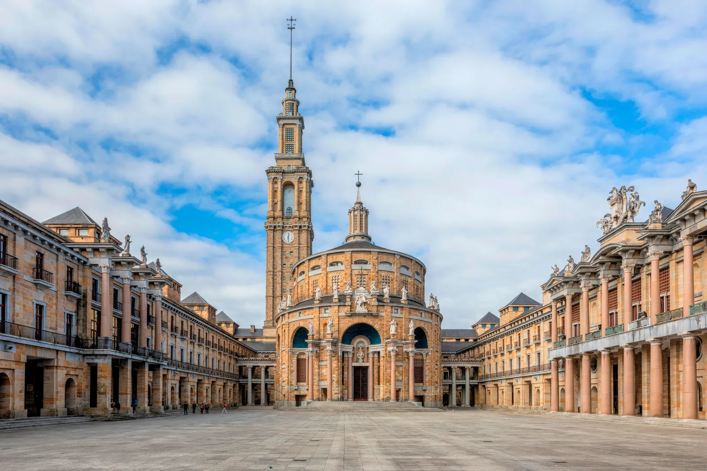

La actividad cultural es muy amplia, y hace especial hincapié en la formación pública. Desde 1981 existe una Universidad Popular con talleres y cursos, así como una red de centros sociales y bibliotecas en cada barrio. Tienen especial importancia el Ateneo Jovellanos, institución liberal fundada en 1953 con el impulso del catedrático y político Torcuato Fernández-Miranda, el Ateneo Obrero de Gijón, una entidad cultural con más de cien años de vida, Ateneo de la Calzada, el Antiguo Instituto Jovellanos y un futuro centro cultural en Cimadevilla, la Tabacalera. Se realizan actividades culturales todo el año, que aumentan considerablemente en los meses de verano, sobre todo en agosto por las fiestas de la Asunción (15 de agosto), con fiestas, música y teatro, que complementan la programación continua del Teatro Municipal Jovellanos. Entre los actos consolidados en la ciudad podemos destacar:

- Universidad Laboral de Gijón
- FETEN Feria Europea de Teatro para niños, en febrero.
- L.E.V. Festival · Laboratorio de Electrónica Visual · Festival Internacional de Creación Audiovisual de Gijón, a principios de mayo.
- Feria del Libro de Gijón/Xixon - FELIX, en Junio
- Metrópoli Gijón, Festival Media de Cultura y Entretenimiento de Gijón, incluyendo una Cómic-Con, que se celebra a finales de junio en el Recinto Ferial.
- La Semana Negra, en julio.
- El Festival aéreo Internacional en julio.
- Festival Arco Atlántico, en julio
- Festival Folclórico Internacional, finales de julio.
- Feria Internacional de Muestras de Asturias (FIDMA), en agosto.
- El Festival Internacional de Cine de Gijón, a finales de noviembre.
- Encuentro literario La Arribada.
Los centros municipales programan en sus sedes todo tipos de espectáculos, destaca la cita con el jazz que se celebra al menos una vez al mes en el Antiguo Instituto bajo el nombre Jazz en el Centro. Desde 2006, la ciudad cuenta con un coro de voces blancas conocido en toda la región, los Niños Cantores de Gijón, que ofrecen anualmente conciertos de diferentes iglesias y parroquias de la ciudad, tales como San José, Nuestra Señora de Fátima o San Nicolás de Bari entre otros.